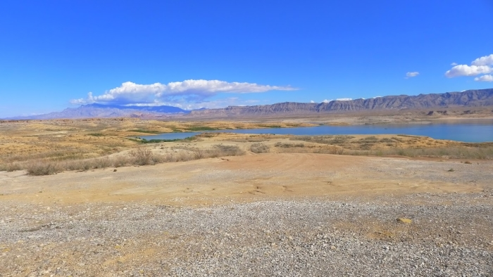

3/7 - Sud-Ouest américain : sécheresse et populations
Bonjour à tous !
Dans notre dernier article, publié dans le Montana, nous vous avions parlé des enjeux de la gestion de l’eau douce dans les espaces agricoles à faible densité de population. Aujourd’hui, après avoir repris la route, traversé le Wyoming, l’Idaho, l’Utah, le Nevada, la Californie et l’Arizona, et en nous étant ainsi rapproché de jour en jour des zones plus arides du continent, nous souhaitons vous parler des enjeux de la répartition de l’eau douce dans des espaces où celle-ci doit sustenter des populations nettement plus denses (92 habitants/kilomètre carré en Californie) et où les pluies se raréfient d’année en année.
Comment subvenir aux besoins en eau des villes immenses comme Los Angeles et ses 17 millions d'habitants ?
En quittant les plaines agricoles de l’Idaho, nous entrons dans le “Grand bassin” des Etats-unis, une zone d’aridité recouvrant le Nevada, le Sud de la Californie et l’Ouest de l’Utah, prolongé au sud par le désert de Sonora, qui s’étend jusqu’au Mexique. Les précipitations y sont très rares, les sols secs et la végétation parsemée. Ce sont des paysages désertiques qui nous entourent jusqu’à notre traversée de la Sierra Nevada. Beaucoup de rivières et de lacs n’apparaissent dans ces endroits que de manière éphémère, à l’occasion d’épisodes pluvieux ponctuels. Particulièrement marqué par cette hydrologie, le Nevada est l’Etat le plus sec des Etats-Unis, avec des précipitations de 104mm par an en moyenne. Il lui faut cependant d’importantes ressources en eau pour soutenir son économie: les loisirs et le tourisme, incarnés par les villes de Reno, Carson City mais surtout de Las Vegas (qui accueille près de 40 millions de visiteurs par an) représentent en effet la principale source de revenu de l’Etat. L’usage industriel de l’eau dans le cadre de l’exploitation des mines d’or (le Nevada est le 4e producteur d’or mondial) augmente également la situation de stress hydrique que connaît l’Etat depuis plusieurs années.
Autour de Las Vegas c'est la Vallée de la Mort et le désert sec
L'hôtel du Bellagio propose un fameux show aquatique... en plein milieu du désert!
Pour subvenir aux besoins en eau de la région, la technique la plus répandue est la construction de bassins artificiels et de systèmes permettant leur pompage. Deux des plus connus d’entre eux, le lac Powell et le lac Mead, retiennent à deux endroits différents les eaux du Colorado afin de permettre leur répartition entre les Etats avoisinants. Grégoire et moi rencontrons sur notre route de nombreux autres bassins de toute taille. En roulant le long de la Sierra Nevada, plusieurs jalonnent les flancs des montagnes. L’immense lac Folsom longe la ville de Sacramento. Dans tous les cas, ces réservoirs atteignent en ce moment des niveaux critiques. La sécheresse devient palpable en Californie quand nous constatons que les panneaux autoroutiers encourageant les conducteurs à une utilisation responsable de l’eau se multiplient. Problème: L’attachement local à un certain confort (piscines, pelouses verdoyantes et golfs au milieu du désert) mais surtout l’importante activité agricole de la Californie, où les ranchs bovins de la Sierra Nevada, les vergers de Salinas et les vignes de la vallée de Napa représentent une importante manne économique, condamnent l’Etat à des tensions vives entre secteurs d’activité et entre différents comtés.

Le lac Mead est un réservoir d'eau pour plusieurs Etats américains, mais 20 à 30% de l'eau retenue disparaît par simple évaporation au soleil
Le Glen Canyon Dam retient l'eau du Lac Powell
C’est dans ce contexte que nous rencontrons Chloé Fandel, doctorante en hydrologie à l’Université de Tucson, Arizona. Celle-ci travaille depuis quelques années sur les problématiques de conservation de l’eau dans ces états, et tente de développer des recherches sur l’utilisation et l’efficacité de bassins aqueux de petite taille appelés gabions. Pour elle, les problèmes liés à la présence de grands réservoirs sont nombreux. D’abord, une évaporation importante les affecte pendants les longs mois d’été, causant des pertes considérables de la ressource. Mais la qualité de l’eau est aussi affectée par le type de sol qui tapisse ces bassins. En particulier, les eaux qui alimentent Tucson et Phoenix parcourent depuis le Lac Mead, situé dans le Nevada, plusieurs centaines de kilomètres dans un canal d’une dizaine de mètres de large que nous avons pu voir du bord de la route. 50% de l’eau de Tucson provient de celui-ci, mais cette eau est souvent trop salée pour une consommation saine. De plus, le niveau du lac Mead descend année après année, car les Etats pouvant disposer de ses réserves ont légalement la possibilité d’en tirer une quantité annuelle fixe, souvent supérieure aux apports du lac.
Le Central Arizona Project est un canal qui s'étend sur 500 kms au milieu du désert pour apporter l'eau du Lac Mead aux villes de Phoenix et de Tucson
Une des stations de pompage du canal, très gourmande en énergie
Chloé nous explique que la juridiction locale est très compliquée et empêche des prises de mesure à l’échelle fédérale, ce qui entraîne un statu quo aux issues incertaines, les projections les plus pessimistes prévoyant un assèchement de la réserve à l’horizon 2025. Toutefois, elle nous prévient que des mesures locales existent, et qu’une partie de la population n’hésite pas à agir face au défi posé. Les jardins de cactus remplacent peu à peu la mode du gazon vert en Californie et en Arizona, et la ville de Tucson impose à présent à ses golfs l’utilisation exclusive d’eaux usagées pour l’irrigation des terrains. Après nous avoir montré le canal d’approvisionnement en eau de Tucson, traversant les plaines de cactus, Chloé nous fait découvrir une immense mine de cuivre qui s’étend au sud de la ville. C’est une nouvelle fois l’occasion pour elle de nous parler de l’importance des choix individuels dans la préservation de cette ressource. Si les obstacles politiques et juridiques sont nombreux pour l’établissement d’un mode de gestion durable de l’eau douce, des actions à petite échelle sont à la portée de tous: renouveler moins fréquemment les téléphones portables, très demandeurs en terme de minerais, baisser sensiblement sa consommation de viande, éviter l’achat systématique de textiles cotonneux, choisir des loisirs plus durables que le golf en Arizona. Les choix sont simples et il ne faut pas sous-estimer leur influence.
Un de nombreux panneaux autoroutiers californiens pour sensibiliser la population aux enjeux hydrologiques
L’objet de ses recherches porte directement sur une utilisation plus intelligente de la ressource. Il s’agit pour elle de cibler les rivières et lacs dits “éphémères” dont je parlais plus tôt dans l’article. L’Arizona possède un climat à large dominante aride, mais quelques fois par an, au moment de la mousson, des précipitations importantes affectent la région. A cette occasion, les eaux dévalent rapidement les terrains et peinent à infiltrer prondément les sols. Le but de Chloé est donc d’élaborer de petits barrages sur ces rivières éphèmères afin de ralentir leur cours, d’humidifier plus durablement les sols et d’en faire des réserves naturelles pour cette eau de pluie. A l’aide de capteurs et de photographies, Chloé tente de déterminer l’utilité de tels barrages. Bonne chance à elle pour son doctorat !
Le gabion est sensé retenir l'eau des crues pour permettre une meilleure infiltration du sol
Une initiative comparable a également retenu notre attention au cours de notre passage en Californie, au moment de rencontrer une start-up locale. C'est à San Diego que nous rencontrons Chiara Dorigo qui, avec son père, travaille depuis quelques années à l’élaboration d’un mécanisme de recyclage des eaux usées. Comme Chloé, celle-ci nous fait part des problèmes de gaspillage qui entourent la question de l’eau en Californie, nous expliquant que plus de la moitié de l’usage des eaux domestiques dans les foyers est destinée à l’irrigation des jardins. Son système en développement, du nom de Greyble, vise à redistribuer les eaux des douches et éviers dans les sols via un réseau d’irrigation sous-terrain. Cette technique a le double mérite de réutiliser des eaux propres à l’irrigation mais impropres à la consommation, mais aussi d’éviter l’évaporation forte qui affecte les systèmse d’irrigation classiques. Son but à long-terme est de permettre des économies en eau de 20 à 30% par foyer.
Le dispositif imaginé par la start-up Greyble pour réutiliser l'eau usagée des maisons californiennes
Un constat notable est à faire à l’issue de ces rencontres: la sécheresse est un défi important pour les populations de l’Ouest américain et, dans le cas de la gestion de l’eau douce, celle-ci possède les moyens financiers pour élaborer des infrastructures et des systèmes permettant l’optimisation de son utilisation. Canals, réseaux de recyclage, barrages et réservoirs géants, détournements de fleuves… Qu’en est-il des régions où ces moyens viennent à manquer ?
Le mois prochain, nous vous parlerons donc de la gestion de l’eau dans un pays en développement, le Mexique. Un important sujet de questionnement sera celui du fleuve Colorado car, à quelques centaines de kilomètres de Phoenix, celui-ci passe la frontière en ayant été diminué d’une large majorité de son débit par les grandes villes de l’Ouest Américain.
Le Colorado à la sortie du Lac Powell
Nous vous en dirons plus une fois la frontière passée !
En bonus une vidéo de notre passage dans le Sud-Ouest américain et des extraits de notre interview avec Chloé Fandel
Sous-titres disponibles
Merci pour votre attention et à très bientôt !
Antoine